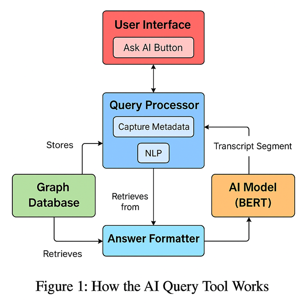

Introduction
The In-Video AI Query Assistant is a novel feature proposed for YouTube to enhance user engagement by allowing viewers to resolve doubts directly within the video player interface. By integrating an AI-powered query tool, accessible via a button, users can pause a video, input a query, and receive contextual, personalized answers without leaving the platform.
This addresses the critical issue of users being distracted by external searches, which risks disengagement and reduced watch time — a key driver of ad revenue.
Problem Statement
When users encounter doubts while watching YouTube videos, they often pause and search external platforms or AI tools. This disrupts the viewing experience, risks users abandoning the video, and decreases total watch time.
System Design
1. User Interface (UI)
- An “Ask AI” button integrated into the YouTube video player interface.
- Provides a text input field for query submission and displays AI-generated responses.
2. Query Processor
- Captures user queries along with contextual metadata (video ID, timestamp, user ID, etc.).
- Performs natural language processing (NLP) for intent detection and semantic similarity analysis to identify or reuse existing queries.
3. Graph Database
- Stores video metadata (video ID, transcript, timestamps, tags), user data (user ID, watch history), and query data (query text, timestamp, video ID).
- Models relationships between videos, users, queries, and concepts to provide context for answers.
4. AI Model (BERT)
- A fine-tuned BERT model processes queries with video context (transcript segments, concepts) to generate accurate, video-specific responses.
Data Pipeline & Processing
1. Data Collection
The system ingests multi-source data streams including video metadata (IDs, transcripts, tags) and anonymized user behavior data such as watch history, interaction logs, and prior query submissions.
2. Processing
Advanced NLP pipelines parse transcripts to perform entity recognition, topic segmentation, and semantic embedding for effective intent detection and context comprehension.
3. Storage
Transcript embeddings, user-query mappings, and extracted concepts are stored in a structured format to generate and maintain an up-to-date graph.
4. Graph Database
A graph is generated from the structured data and stored in a graph database, facilitating efficient contextual query resolution and personalized recommendations.